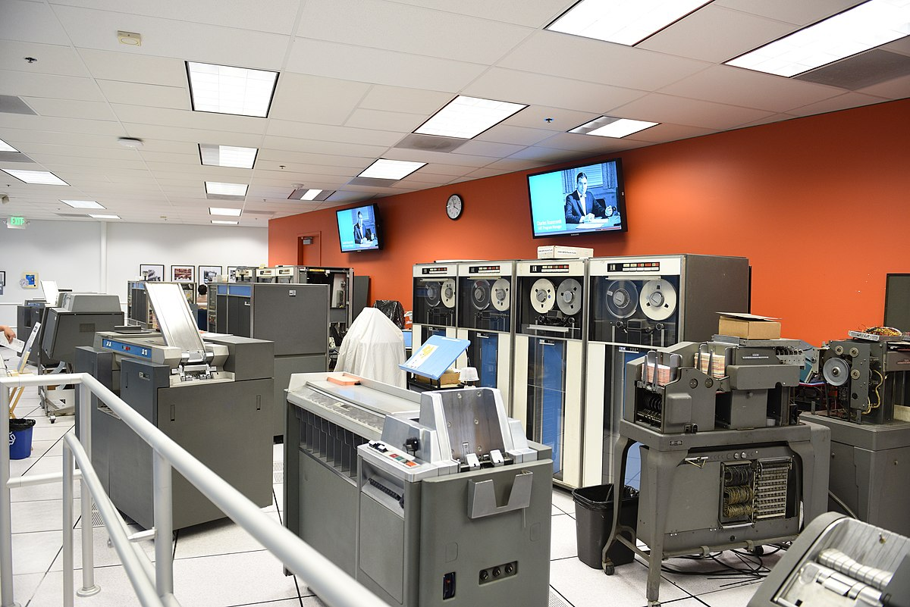
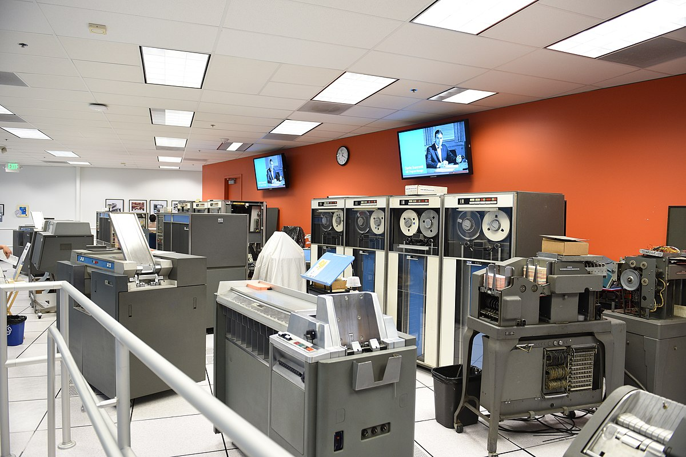

Tranzistorul este un dispozitiv electronic din categoria semiconductoarelor care are cel puțin trei terminale (borne sau electrozi), care fac legătura la regiuni diferite ale cristalului semiconductor. Este folosit mai ales pentru a amplifica și a comuta semnale electronice și putere electrică.
Tranzistorul este componenta fundamentală a dispozitivelor electronice moderne, și este omniprezent în sistemele electronice. Ca urmare a dezvoltării sale la începutul anilor 1950, tranzistorul a revoluționat domeniul electronicii, și a deschis calea pentru echipamente electronice mai mici și mai ieftine cum ar fi aparate de radio, televizoare, telefoane mobile, calculatoare de buzunar, computere și altele.
Unul dintre primele calculatoare cu tranzistori notabile a fost TX-0 (Transistorized Experimental computer), construit la Massachusetts Institute of Technology (MIT) în 1956. Acesta a fost unul dintre primele calculatoare complet tranzistorizate și a fost utilizat pentru cercetare și dezvoltare în domeniul informaticii.
În același timp, IBM a fost unul dintre pionierii în adoptarea tranzistoarelor în calculatoarele comerciale. IBM 608, lansat în 1957, a fost un exemplu timpuriu al unui calculator comercial care a folosit tranzistoare în locul tuburilor electronice. Acesta a fost utilizat în special pentru aplicații științifice și de inginerie.
O altă inovație semnificativă a fost IBM 1401, lansat în 1959. Acest calculator de medie capacitate a fost unul dintre cele mai populare calculatoare din anii 1960 și a folosit tranzistoare pentru a înlocui tuburile electronice, ceea ce l-a făcut mai mic, mai ieftin și mai fiabil.
În paralel cu aceste dezvoltări comerciale, instituții academice și de cercetare au continuat să contribuie la avansarea calculatoarelor cu tranzistori. De exemplu, TX-2, construit tot la MIT, a fost lansat în 1958 și a fost unul dintre primele calculatoare care a utilizat tranzistoare în mod extensiv, deschizând calea pentru cercetări ulterioare în domeniul graficii pe calculator și al inteligenței artificiale.
În concluzie, primele calculatoare cu tranzistori au reprezentat un salt semnificativ în evoluția tehnologiei calculatoarelor, facilitând trecerea de la calculatoarele bazate pe tuburi electronice la cele mai mici, mai rapide și mai eficiente energetic. Aceste inovații au deschis calea pentru calculatoarele moderne și au contribuit semnificativ la revoluția digitală.